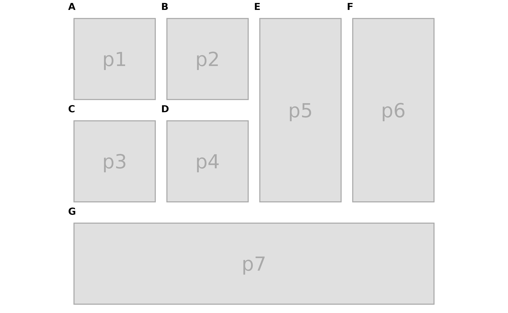
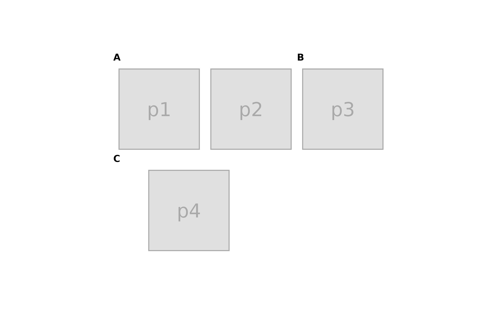

new_layout() describes a whole figure in one call: a design string
shows where each plot goes. Unlike new_row(), it always starts a new
layout; an existing layout can be used as one of its plots.
Usage
new_layout(
...,
design,
arrange_by = c("row", "column", "grid"),
tags = NULL,
auto_width = NULL,
auto_height = NULL,
auto_margins_x = NULL,
auto_margins_y = NULL
)Arguments
- ...
ggplots, grobs or layouts, in the order described above. Lists are spliced.
- design
A string with one line per row of cells.
- arrange_by
How blocks without spanning plots are built:
"row"(default, one row per design line),"column"(one column per design column) or"grid"(shared rows and columns).Panel tags, as in
layout_tags():"A","a","1","I","i"or a character vector.NULL(default) adds no tags.- auto_width, auto_height
Letters of plots whose panel size is decided by the layout (see
auto_width()), e.g."EF".- auto_margins_x, auto_margins_y
Letters of plots that keep their panel size and are centered horizontally or vertically in the available space (see
auto_margins()).
Details
Design. Each line of design is a row of cells, each character a cell:
Each letter is one plot. A plot may cover several cells, which must form a rectangle. Uppercase and lowercase letters are different plots.
#is an empty cell.
The design describes the arrangement, not the size: plots keep their own
panel sizes, also when they span several cells. To let a plot fill the
space it spans, list it in auto_width or auto_height (or center it
with auto_margins_x/auto_margins_y). Designs that can't be split along full rows and
columns (e.g. a pinwheel) are not supported.
Arrangement. The design is split along full rows and columns that no
plot crosses. Blocks of plots without spanning plots are built according
to arrange_by. With "row" (default), each line of the design becomes a
row, so "AB\nCD" is the same as
new_row(A, B) |> new_row(C, D): each line is laid out on its own. With
"column", each design column becomes a column. With "grid", the
block becomes a grid (see new_grid()), so plots in the same row and column of the
design share their lines.
Plot order. Plots in ... are assigned in alphabetical order of the
letters: A to Z, then a to z.
Tags. The letters only place the plots. Tags are numbered in reading
order, as with layout_tags(). To let several plots share one tag, pass
them through tag_group(), e.g. new_layout(tag_group(p1, p2), p3, ...).
The result is a normal layout, so it can be extended and adjusted with
new_row(), layout_spacing() etc.
Examples
p <- lapply(paste0("p", 1:7), function(x) dummy(name = x))
new_layout(
p,
design = "
ABEF
CDEF
GGGG
",
auto_width = "G",
auto_height = "EF",
tags = "A"
)

# the first two plots share tag A; # is an empty cell
new_layout(
tag_group(p[[1]], p[[2]]), p[[3]], p[[4]],
design = "
ABC
D##
",
tags = "A",
auto_margins_x = "D"
)
